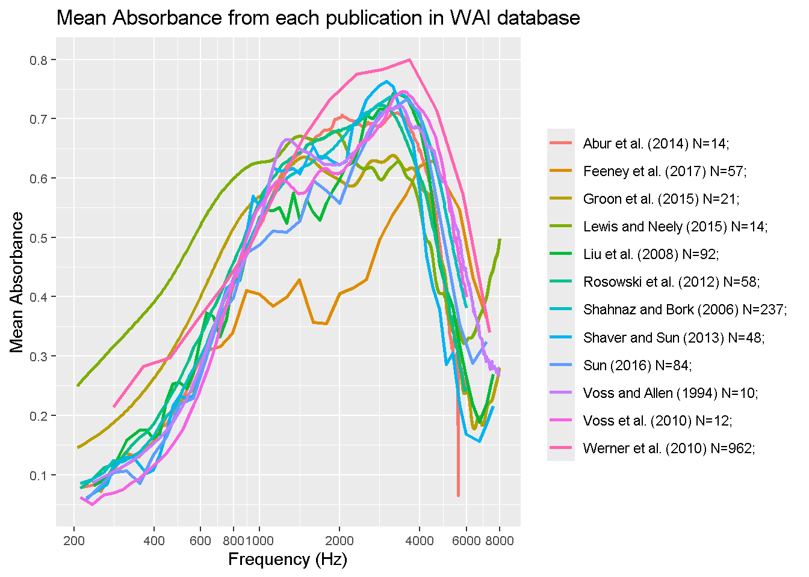
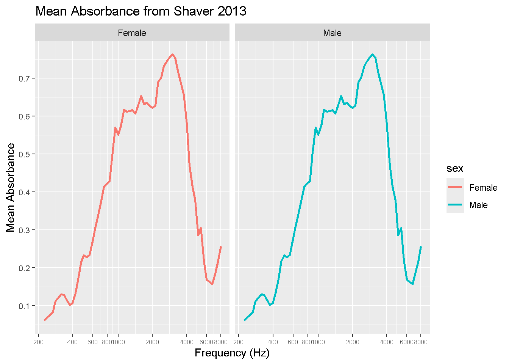

library(tidyverse)
library(RMariaDB)
con_wai <- dbConnect(
MariaDB(), host = "scidb.smith.edu",
user = "waiuser", password = "smith_waiDB",
dbname = "wai"
)
Measurements <- tbl(con_wai, "Measurements")
PI_Info <- tbl(con_wai, "PI_Info")
Subjects <- tbl(con_wai, "Subjects")SQL Practice with WAI Database
For this project, I will be manipulating the Wideband acoustic immittance SQL data base to make some observations on their results. SQL is really cool, and my data science skills in R transfer over really well here! I will practice by re-creating the graph displayed on their website, which 12 of their data sets graphed according to frequency. I will then pick a data set and compare the results between sex.
Here is their official website/citation:
Voss, Susan E., et al. Wideband Acoustic Immittance (WAI) Database. Smith College, 2022. National Institutes of Health, NIDCD. Dataset. https://doi.org/10.35482/egr.001.2022.
“The Wideband Acoustic Immittance (WAI) Database is funded by the National Institutes of Health, NIDCD (R15 DC014129) and hosted on a server at Smith College. Contributors include researchers and students from Smith College and Amherst College.”
SELECT Identifier, Frequency, LOG10(Frequency) AS logFreq, AVG(Absorbance) AS avgAbsorb
FROM Measurements
WHERE Identifier IN ("Abur_2014", "Feeney_2017", "Groon_2015", "Lewis_2015", "Liu_2008", "Rosowski_2012", "Shahnaz_2006", "Shaver_2013", "Sun_2016", "Voss_1994", "Voss_2010", "Werner_2010") AND Frequency < 8000 AND Frequency > 200
GROUP BY Frequency, Identifier# combining two different data sets
SELECT p.Identifier, p.AuthorsShortList, p.Year, COUNT(DISTINCT SubjectNumber, Ear) as N_ears, AVG(Absorbance) AS avgAbsorb, Frequency,
CONCAT(p.AuthorsShortList, " (", p.Year, ") N=", COUNT(DISTINCT SubjectNumber, Ear), "; ") AS label
FROM PI_Info as p
LEFT JOIN Measurements as m ON m.Identifier = p.Identifier
WHERE m.Identifier IN ("Abur_2014", "Feeney_2017", "Groon_2015", "Lewis_2015", "Liu_2008", "Rosowski_2012", "Shahnaz_2006", "Shaver_2013", "Sun_2016", "Voss_1994", "Voss_2010", "Werner_2010") AND Frequency < 8000 AND Frequency > 200
GROUP BY Frequency, Identifierggplot(final_table, aes(x = Frequency, y = avgAbsorb, color = label)) +
geom_line(size = 1) + # Use geom_line for lines
labs(
title = "Mean Absorbance from each publication in WAI database",
x = "Frequency (Hz)",
y = "Mean Absorbance",
color = ""
) +
scale_x_log10(breaks = c(200, 400, 600, 800, 1000, 2000, 4000, 6000, 8000))+
scale_y_continuous(breaks = c(0.1, 0.2, 0.3, 0.4, 0.5, 0.6, 0.7, 0.8, 0.9, 1)) +
theme(
axis.text.x = element_text(size = 8),
axis.text.y = element_text(size = 8)
)
This graph is a re-creation of the author’s frequency graph, which has 12 specefic papers results mapped out on a log scale.
# if weird data -> facet_wrap(~sex/race/etc)
SELECT Identifier, Frequency, LOG10(Frequency) AS logFreq, AVG(Absorbance) AS avgAbsorb
FROM Measurements
WHERE Identifier IN ("Shaver_2013")
GROUP BY Frequency, Identifier
SELECT s.SubjectNumber, s.Sex as sex, AVG(Absorbance) AS avgAbsorb, m.Frequency
FROM Subjects as s
LEFT JOIN Measurements as m ON m.Identifier = s.Identifier
WHERE m.Identifier IN ("Shaver_2013")
GROUP BY s.SubjectNumber, s.Sex, m.Frequency;ggplot(final_subjects, aes(x = Frequency, y = avgAbsorb, color = sex)) +
geom_line(size = 1) + # Use geom_line for lines
labs(
title = "Mean Absorbance from Shaver 2013",
x = "Frequency (Hz)",
y = "Mean Absorbance",
) +
scale_x_log10(breaks = c(200, 400, 600, 800, 1000, 2000, 4000, 6000, 8000))+
scale_y_continuous(breaks = c(0.1, 0.2, 0.3, 0.4, 0.5, 0.6, 0.7, 0.8, 0.9, 1)) +
theme(
axis.text.x = element_text(size = 6),
axis.text.y = element_text(size = 8)
) + facet_wrap(~ sex)
# terminate our sql connection!
DBI::dbDisconnect(con_wai, shutdown = TRUE)These two graphs show the differences betwen mean absorption between males and females measured from the Shaver 2013 study. As you can see, not much difference was recorded.
Thank you!